Touch-LCD-3.49 Waveshare
3.49 in, 640 x 172, a long bar. ESP32-S3, 16 MB flash.
Motion sensor, speaker, two microphones, SD card, BOOT key.
Each app has a bar layout. The games keep their controls near the ends, where the thumbs rest.
Free and open source, under the MIT licence. The latest release
Games that you play by tilt and touch, tools for your electronics bench, play with a friend by radio, and an app store where each app is signed. It is free, and it installs from this site.
You need Chrome or Edge on a computer and a USB cable that carries data. The install takes about two minutes.
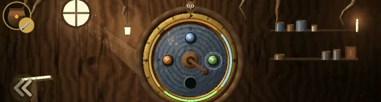
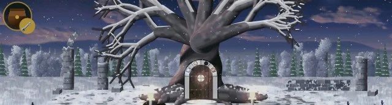
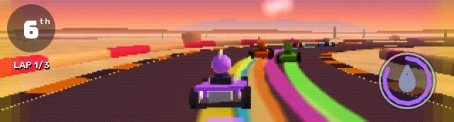
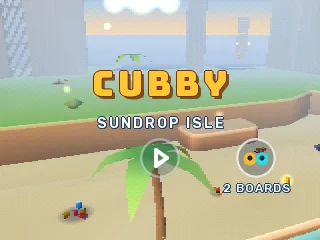
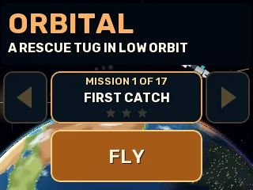
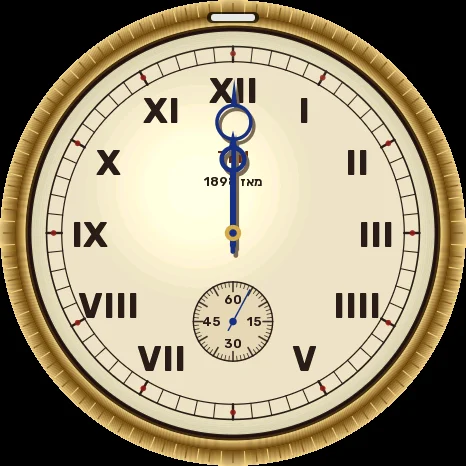
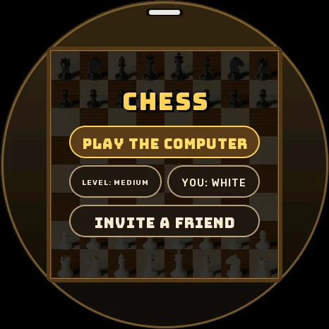
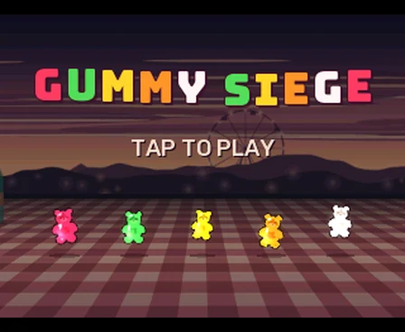
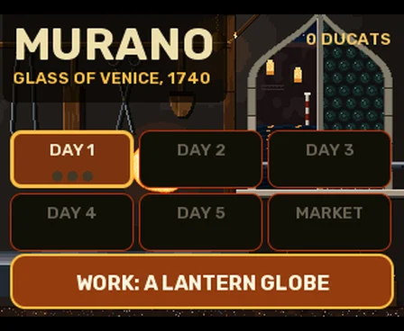
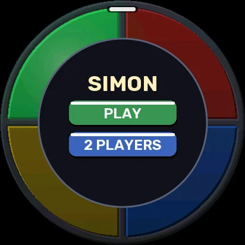
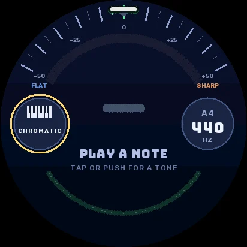
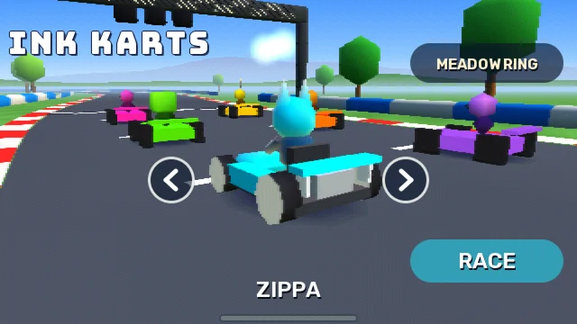
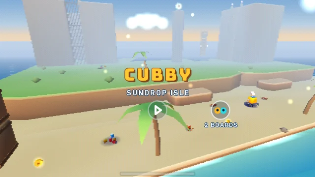
Free and open source (MIT). No account, and no cloud of ours between you and your boards.
24 games made for a board in your hand: a 3D island, a painted adventure, kart races, and board games against the computer.
CUBBY · THE TURNING WOOD · INK KARTS · CHESS
In release 1.0.4
Two to six boards play together over ESP-NOW, with no router and no internet. WALKIE and TALKIE carry your voice.
DIRT KINGS · BACKGAMMON · SEA BATTLE · WALKIE
In release 1.0.4
A motion engine at 200 Hz: tilt, turn, knock, shake and steps. The microphones hear a clap.
TILT · HOP · COIL RIDER · LEVEL
In release 1.0.4
Beats and polyrhythms on glowing rings, ear training, a tuner, a metronome. Over USB the board is a MIDI controller or a microphone.
RING SEQUENCER · SIGHT · TUNER · MIDI · MIC
In release 1.0.4
Wikipedia from the SD card, the night sky through the board, math step by step, how a computer works, Morse code.
WIKI · SKY · INTEGRALS · LINEAR ALGEBRA · BITS · MORSE
In release 1.0.4
At rest the board shows the time over the sky of your place: the sun, the moon and the weather. The Hebrew date and the holidays too.
STANDBY · WEATHER · HEBREW CALENDAR · CLOCK
In release 1.0.4
Pair a cheap ESP32 by radio and give it modules: IR send and receive, 315 and 433 MHz, relays, buttons, motion and door sensors.
COMPANIONS · CONTROL
In release 1.0.4
Read and send IR remote codes, read 315 and 433 MHz remotes, see the 2.4 GHz band, and talk to a device on the pins.
IR DECODER · RF DECODER · SDR · SERIAL MONITOR · I2C SCANNER · MQTT
In release 1.0.4
The board as a keyboard, a touchpad or tilt mouse, media keys, or a game controller for a computer, a phone or a TV.
BT KEYS · GAMEPAD
In release 1.0.4
An app can call about 800 ESP-IDF functions: sockets, TLS, I2C, SPI, BLE and more. Build it with the SDK and push it to the board in seconds, or try it in the desktop simulator.
the SDK · the simulator
In release 1.0.4
Install with one tap from the signed store. Share your own apps: sign them with your key and serve them to your boards.
STORE · poolmgr
In release 1.0.4
From a browser on your network: install apps, move files, see the screen, set up the companions, talk by WALKIE.
In release 1.0.4
Text to speech, speech to text and a small language model, with no internet: the board reads aloud, and you talk to it.
VOICE · TALK · DETECTIVE
On our test boards
Apps check things in the background, also with the screen off, and tell you. Gmail, Reddit and Telegram run on our test boards.
In release 1.0.4
The board checks the signature of each firmware and each app. A new firmware that fails its self-test goes back to the old one.
In release 1.0.4
Your boards trust each other with keys that only you keep. poolmgr updates them one at a time and stops at a failure.
In release 1.0.4
Apps keep tokens and passwords in a secret store. A protected build adds flash encryption, for keys such as an API key.
A build option
A long bar, round screens, a 5-inch tablet: each app has a layout for each screen shape.
Touch-LCD-3.49 · CoreS3 · AMOLED · Watcher · Tab5
In release 1.0.4
The games of the store use the whole board. You tilt the board to steer, shake it to roll the dice, and drag, pinch or tap the glass. Most of them speak English and Hebrew. Point at a picture to see the game move.
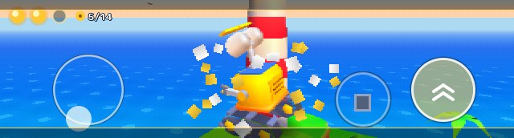
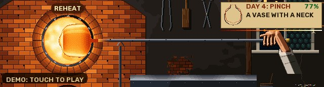
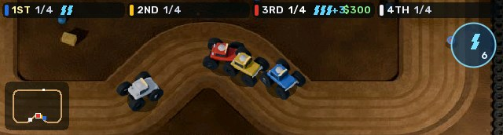
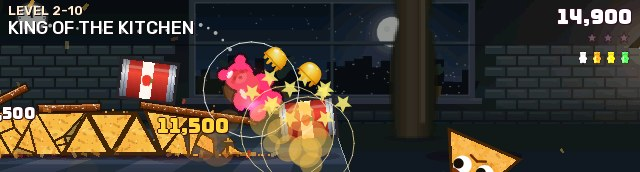
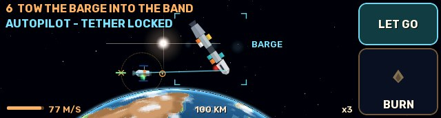
Open the same game on two boards, and they find each other by radio (ESP-NOW). You need no WiFi network, no internet and no account. Boards on the same WiFi play too.
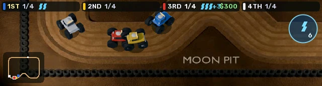
When the board rests in the menu, STANDBY shows the time over the sky of your place: the sun at its real height, the moon in its phase, and the clouds, rain or snow of the weather now. At night it changes to a dim, warm clock. A tap brings the menu back.
Look at a bus, a serial port or an MQTT broker with the board in your hand. The tools are in the store. WALKIE, TALKIE, GAMEPAD and FILES come with the system.
The STORE app installs apps over WiFi, to the board or to its SD card, and the app page of this site installs them over USB. Big games bring a data pack for the SD card: 12.8 MB for THE TURNING WOOD.
The store signs each app, and the release key signs each firmware. The board checks each signature itself. A new release must pass its self-test, or the board goes back to the last good one. See who signs what: the trust map
TFN OS is free, under the MIT licence. The code, the SDK to make your own apps, a desktop simulator that runs the real firmware code, and the pool manager are on GitHub.
You need no account and no sign-in. Your boards can trust each other with keys that only you keep. How it works
Each app has a layout for each screen shape. The install page writes TFN OS to all six boards. New to these boards? Start with the Touch-LCD-3.49: TFN OS started on it, and it has each part that the games use.
Drawn to the same scale from the real screen sizes. The cases are close, not exact. The outlines show the real shape of each board and its screen.
3.49 in, 640 x 172, a long bar. ESP32-S3, 16 MB flash.
Motion sensor, speaker, two microphones, SD card, BOOT key.
Each app has a bar layout. The games keep their controls near the ends, where the thumbs rest.
2.0 in, 320 x 240. ESP32-S3, 16 MB flash.
Motion sensor, speaker, two microphones, camera, microSD slot, in a closed case.
The SE has no motion sensor and no camera: the tilt games give it touch controls.
1.75 in round AMOLED, 466 x 466. ESP32-S3, 32 MB flash.
Motion sensor, speaker. About 25 MB of the flash keeps your apps.
A round menu and round layouts. It has no SD card, so the games with a big data pack do not run on it.
1.8 in AMOLED, 368 x 448. ESP32-S3, 16 MB flash.
Motion sensor, speaker, microphone, SD card.
The apps draw their 320 x 240 layout 1.4 times bigger, so the pixels are softer than on a native layout.
1.45 in round, 412 x 412. ESP32-S3, 32 MB flash.
A wheel, speaker, microphone, camera.
Turn the wheel to choose, push to open, hold to go back. With no motion sensor, the tilt games read the wheel. The install replaces the Seeed firmware; the page can save a copy first.
5 in, 1280 x 720. ESP32-P4, 16 MB flash.
Motion sensor, microphones, SD card, the M5Stack keyboard.
The apps draw a 360 x 640 frame, and the board shows it 2 x 2 on the 5 inch screen. The flash keeps a free slot for a boot menu and a second system.
The install page talks to the board through the USB port of your computer. It finds the board, checks each file, and writes it.
An install erases the data on the board: its settings, its WiFi and its files. The SD card does not change. A board that already runs TFN OS can get an update, which keeps its apps and settings.
Yes. TFN OS and the apps of its store are free, and the source code is open under the MIT licence. Some parts that TFN OS uses have their own open licences: NOTICE.md in the source lists them.
The system with STANDBY, STORE, FILES, WALKIE, TALKIE and GAMEPAD. The games and the tools come from the store: the STORE app of the board, or the app page of this site.
Chrome and Edge on Windows, macOS, Linux and ChromeOS. They have Web Serial, the part that talks to the USB port. Firefox, Safari and phones do not have it.
Use a cable that carries data (some cables only charge). Close other programs that use the port, such as a serial monitor. If the board still does not answer, hold its BOOT key while you connect the cable, then click Connect again.
Yes, if you keep a copy. Before an install, the page can save the whole flash of the board to a file. Keep that file private: it has the WiFi passwords that the board knew. To put it back, write it at address 0 with esptool.
One text command, "ota", which asks a running TFN OS for its board kind and version. Then the firmware files of this site. The page checks the SHA-256 of each file before the write, and the board checks each block after it.
No. The site has no analytics, no cookies of its own and no third-party scripts. The fonts and the flasher library come from this site.